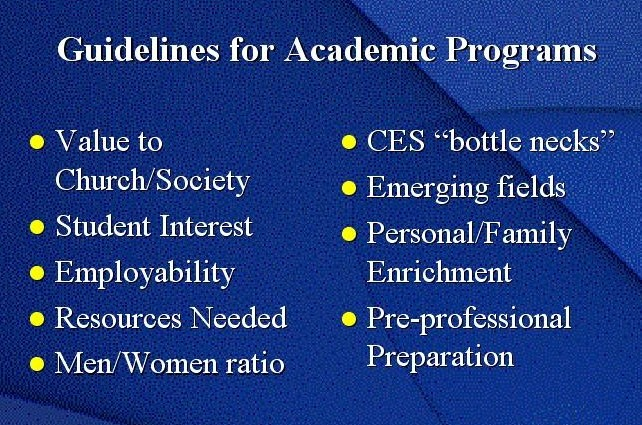

| Home | Alumni & Friends | Students | Employees | Directories | Search | Index | Help |
| The Transition: Guidelines |
These guidelines reflect the wide variety of considerations that were given to selecting the programs to be offered at Brigham Young University-Idaho.

Back to "Ricks College becomes BYU-Idaho: The Transition"
Created and maintained by the Ricks College
Public Relations
Contact Don Sparhawk (208) 356-1152
E-mail sparhawkd@ricks.edu
©Ricks College 2000